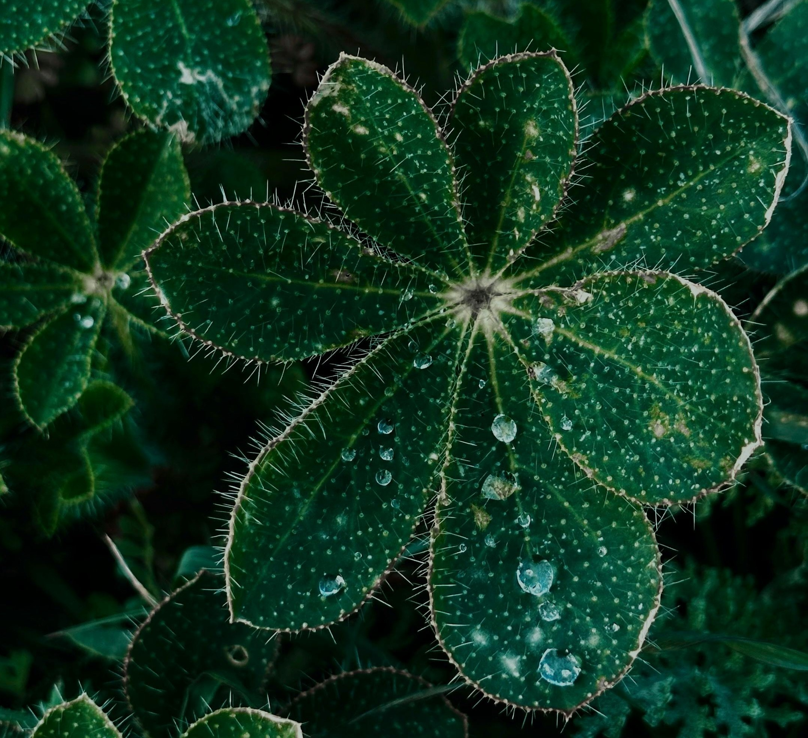
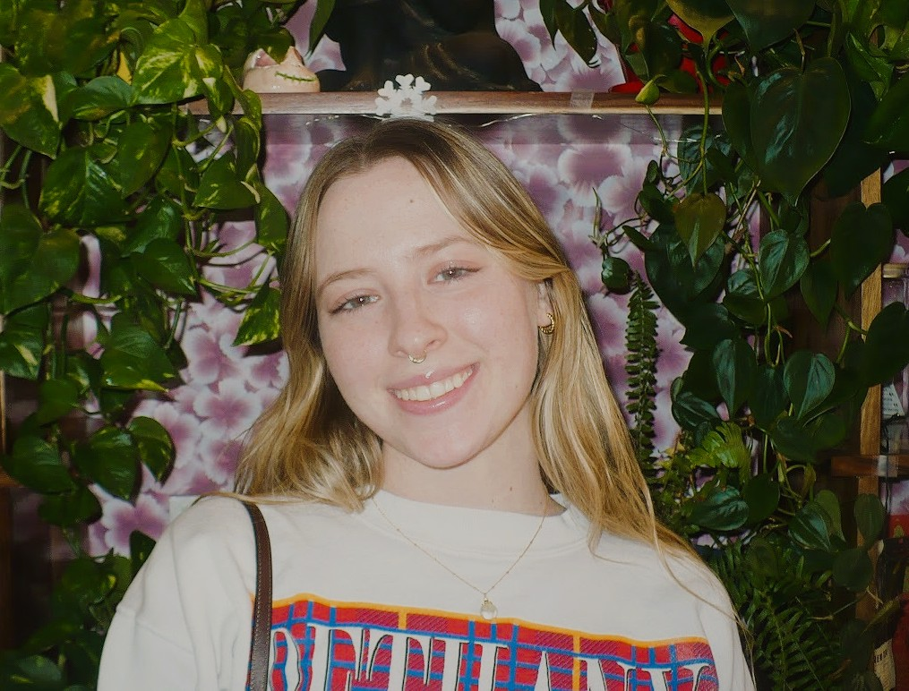

What is Eco-Friendly?
Being eco-friendly means being mindful of the effect you have on the environment and taking actions to be a friend to the environment. Eco-friendly can be as simple as recycling or as big as eating a vegetarian diet.
Why does it matter?
Being eco-friendly matters because we are a part of the world around us. Although it may not seem like it, our everyday decisions have an impact on the environment. Each action, little by little causes a big change in the world. By being eco-friendly, we can help to preserve the world around us and make it a better place for ourselves and those who inherit our planet.


About the Author!
Hello readers! I am Aimee, an Arizona State University student with a passion for the environment. I study conservation biology and am dedicated to promoting sustainable practices. If you are like me I had no idea where to start making a difference, but making the world a better place is easier than you think!